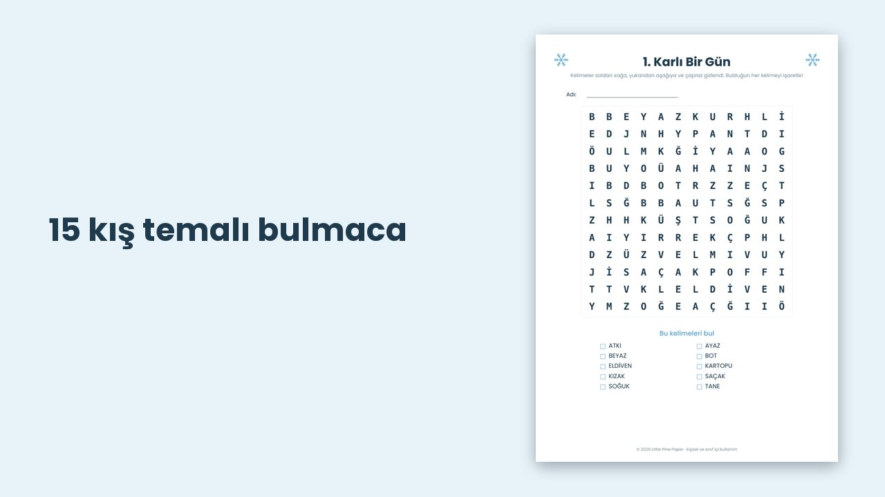
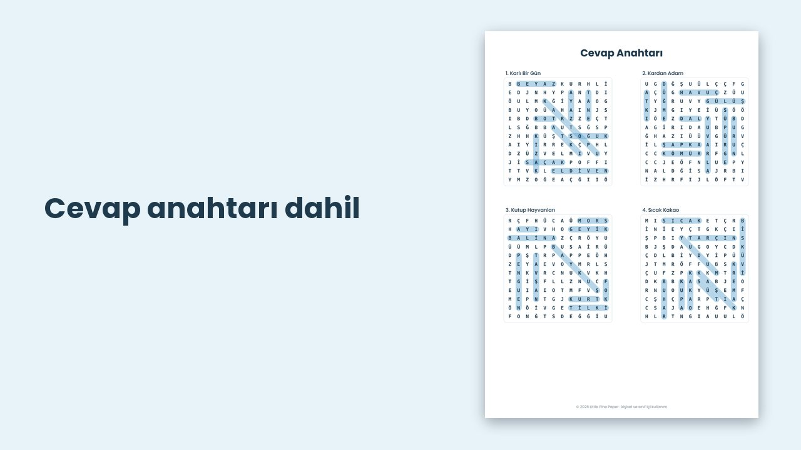

Kış Temalı Kelime Avı Bulmaca Kitapçığı - 15 Sayfa Yazdırılabilir PDF



Kış Temalı Kelime Avı kitapçığı, 7-10 yaş arası çocuklar için hazırlanmış eğlenceli bir aktivite setidir. Bu dijital ürün, kış mevsiminin atmosferini yansıtan çeşitli temalarla çocukların vakit geçirmesini sağlar.
Paket İçeriği:
- 15 adet kış temalı kelime avı bulmacası (12x12 ızgara)
- Her bulmacada 10 adet gizli Türkçe kelime (yatay, dikey ve çapraz)
- Renkli kapak sayfası ve 4 sayfalık cevap anahtarı
- Karlı Bir Gün, Kardan Adam, Kutup Hayvanları, Sıcak Kakao, Kış Kıyafetleri, Kış Sporları, Sıcacık Ev, Kış Mutfağı, Kış Havası, Kış Kuşları, Yeni Yıl, Buz Sarayı, Kış Ormanı, Kar Tatili ve Kuzey Işıkları temaları
Nasıl Kullanılır:
Satın alma işleminden sonra A4 veya US Letter formatındaki PDF dosyalarını bilgisayarınıza indirin. İstediğiniz sayfaları evde veya okulda yazdırarak hemen kullanmaya başlayabilirsiniz. Her bulmacada kelimeler farklı yönlerde gizlenmiş şekilde sunulmaktadır.
Bilmeniz Gerekenler:
Bu ürün tamamen dijital bir indirmedir; adresinize fiziksel bir ürün gönderilmeyecektir. Dosyalar sadece kişisel kullanım ve sınıf içi eğitim faaliyetleri için uygundur. Little Pine Paper tarafından hazırlanan bu içerik ticari amaçla yeniden dağıtılamaz.